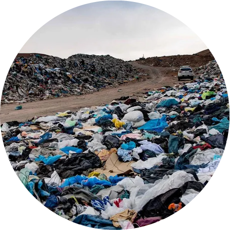
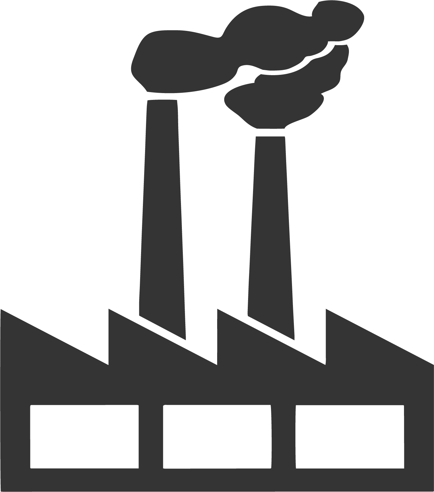

¡Que problema!
- Existe una gran contaminación al medio ambiente al desechar prendas.
- La industria textil tiene el 2do lugar como contaminante industrial del planeta.
- Fabricar una gran cantidad de ropa consume millones de litros de agua cada año.
- También producirla cuesta toneladas de pertróleo cada año.

Montañas de ropa usada en el desierto de Atacama (Chile)
Datos a tener en cuenta
TIRAR ROPA CONTAMINA
La mayoría de las prendas que tiramos están hechas de algodón, plásticos y químicos, textiles que son creados con derivados del petróleo como el poliéster o nylon.

CREAR ROPA CONTAMINA
Hay gran contaminación en la producción de ropa cada año. Si el aumento continúa, según un artículo de Greenpeace, para 2050 se triplicará el consumo de petróleo a 300 millones de toneladas para producir ropa anualmente.
FAST FASHION CONTAMINA
Se estima que el 73% de la ropa producida anualmente termina incinerada o en basureros, (por las tendencias o colecciones de primavera-verano, otoño-invierno) lo que contribuye a la contaminación terrestre y atmosférica.